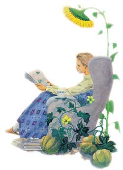

WILL SHELTON
One of the great winter pleasures of gardeners is planning and dreaming about what to grow next season. And one of the best ways to transform those dreams into reality is to browse through some of the wonderful, mail-order seed catalogs.